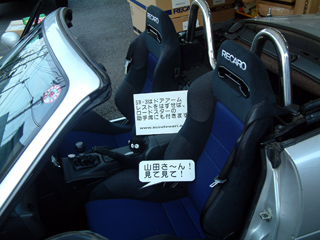
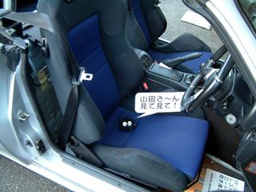

|
 |
で、シートを交換しました。フルバケだとかなり安いものがありますが、ポジション調整範囲が狭いのと、クッションが薄くて硬いものが多いのでセミバケットで探しました。有名メーカのシートは高価で、特にレカロなんかは高いと思っていました。確かに高いものだと中古でロードスターが買えてしまうくらいのものもありますが、他メーカと変わらないくらいのものがありました。選択したシートは、RECARO SR-3 CHALLENGER です。レカロ、レカロってそんなにいいのか・・って思っていたのですが良かったです。 |
 |
SR-3 (SR-III) はロードスター(の助手席？)には付かない説がときどきあるのですが、シートベルト・アンカーボルトを薄いものに、ドア・アームレストをとれば付きました。といっても今回は自分で取り付けたわけではなく、八王子のレカロシート専門店である、ＪＥＴ・ＳＥＴにお願いしました。あ、あと屋根の穴の方はとりあえず修理できるまで、プレハブに眠っていたハードトップで凌ぐことにしました。 |